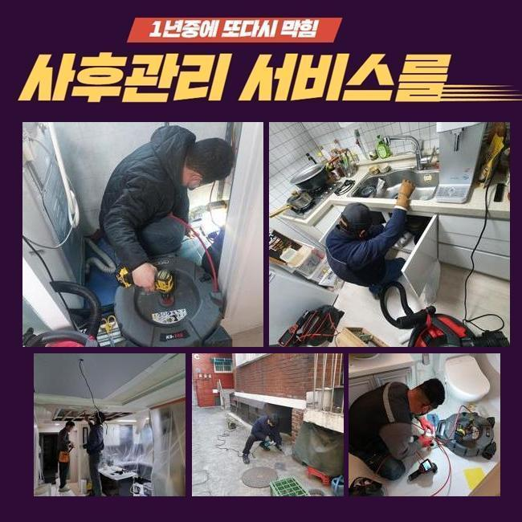
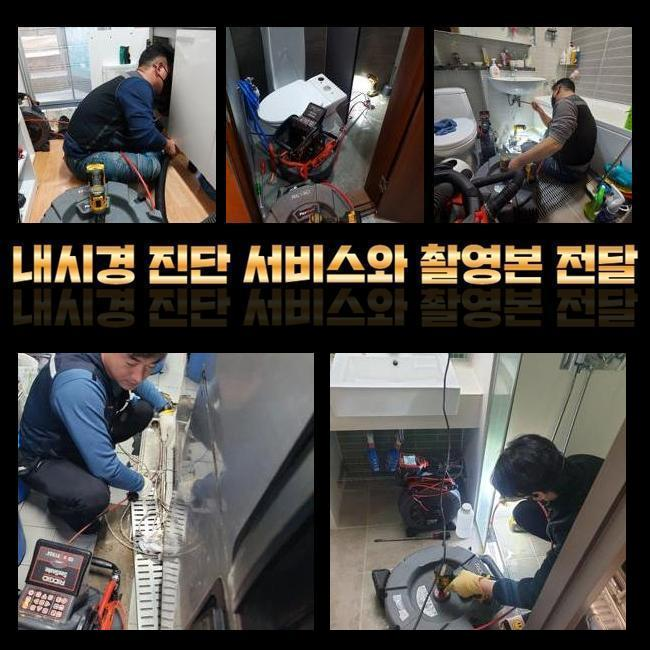
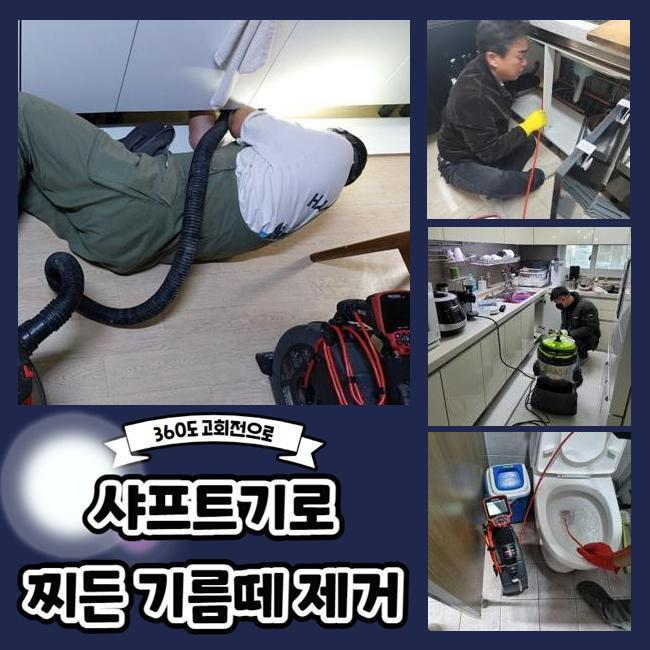
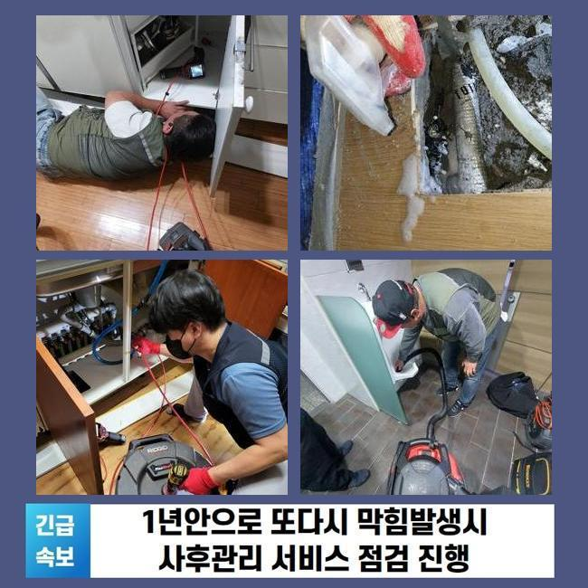
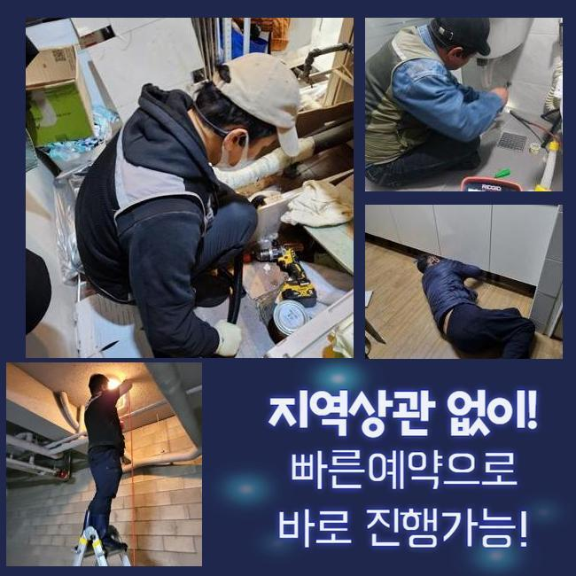
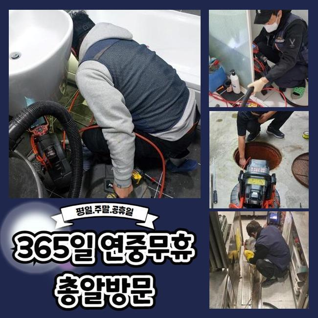

🏠 용인 양지면대변기역류 원삼면 악취차단 해결방법
용인 양지면 싱크대막힘 전문 시공 후기

📋 작업 개요
- 위치: 용인 양지면, 양지면, 용인
- 서비스 유형: 싱크대막힘, 변기막힘, 하수구막힘, 배관막힘, 역류해결, 뚫는업체, 배관청소, 악취차단
- 작업 일시: 2025. 4. 11. 22:11
- 업체명: 하수구수사대 (010-5615-2118)
🔍 문제 상황
용인 양지면대변기역류 원삼면 악취차단 해결방법
수돗물을 빈번하게 쓰는 주방이나 세탁실에서 불현듯 하수구 기능이 고장이 나버린 상황이라면 즉각 관통을 시도해야 합니다
특히 싱크대가 막힌다면 끼니를 챙길 때도 어려움이 발생하고 깨끗하게 정리하는 작업도 힘들어질 것입니다
물을 당장에 못쓰니 최대한 빨리 싱크대 수리를 해달라고 요구를 많이 하십니다
지금부터 말씀 드릴 곳 역시 싱크대 통수 마비로 전체적인 상태 점검과 꼼꼼한 클리닝이 당장 급하다고 저희에게 컨택해주셨습니다
불과 얼마 전에 싱크대를 새걸로 재설치했는데 이와 같은 막힘이 빚어졌던 것이었고 집에 있는 도구만으로는 개선을 할 수가 없는 상황이라 보여서 저희에게 서비스를 요청주신 겁니다
장비를 챙겨 이동했고 싱크대가 고장난 동기를 조사하기 위해서 하부장에 접근해서 진단을 시작해 보았습니다
해당 해부장 안에서는 물이 역류되어 버렸고 물이 흥건한 상태로 드러났고 겉으로 나온 하수의 수량도 상당한 수준이었습니다
쭉 이렇게 내버려뒀으면 가구도 손상이 되겠지만 아래층으로의 물 샘 현상까지 진행될 수 있으므로 빠른 시일 내에 배관 수리를 실시해야 했습니다
다음 정화활동의 시행에 앞서서 배수구와 싱크대를 잇는 주름진 배관을 떼내어 확인하니 여기도 찌꺼기가 빼곡하게 자리 잡은 모습이더라고요

🔎 원인 분석
💡 전문가 진단: 정밀 진단 장비를 사용하여 슬러지의 고착 여부를 판명하고 타격/세척 작업을 실시했습니다.
점도가 높은 이물질들이 마디마디에 촘촘하게 들어가 있는 나쁜 컨디션이었습니다
이 정도의 오염도라면 더 깊은 배관에는 잔여물들이 더 오래 쌓여왔을 것이고 오염 범위가 넓을거라는 예측을 할 수 있었습니다
배수구의 겉에도 이물질이 많았기에 초반 정화를 위해서 흡입을 해주는 석션을 내려 보냈습니다
석션작업을 거치면 찌꺼기 및 안쪽에 자리한 물도 위로 끌어올려주는 성능이 있으므로 하수구 마비 현장에서 유용성이 있습니다
잘 풀리는 이물질들이 머물러있는 상태거나 입구 부근에서 터를 잡았다면 그저 석션기만 써도 물길이 회복됩니다
다른 장치들을 통한 실시를 하기 전에 석션기를 먼저 가동해서 안쪽의 찌꺼기를 없애버리고 나서 석션기로 해결될 지 여부도 알아내기로 했어요
이물질을 싹 없애보려고 흡수 단계를 강하게 거듭 적용해봤지만 전혀 뚫리지 않아서 추가로 원인 규명을 하는 공정을 실시 해보았어요
막힌 쪽을 가까이서 보려면 꽉 막힌 관로에 카메라기기를 배치하여 배관의 정보에 대해서 낱낱이 알아내야 하는데요
카메라가 전송한 화면에서 확인된 상태는 전체적으로 불그스름한 색상이 자리하고 있었습니다
이처럼 붉게 보인다면 내시경 앞에 있는 라이트가 끈적대는 유막에 닿였을 때 보이는 증세입니다
점검을 통해보니 해당 싱크대 막힘은 유분 덩어리들이 잔뜩 차올라서 이런 물막힘 증상이 초래된 것 같더라고요

🔧 작업 과정
중단된 곳들을 찾아서 오염부를 모조리 없애 버리기로 전략을 세웠어요
거의 모든 하수구에 활용되는 청소도구라는 평을 받는 샤프트를 근처로 가져와서 본격적인 청소에 착수했습니다
샤프트는 장치의 끝부분에 견고한 금속 재질의 노커가 부착되어 있습니다
덩어리처럼 경화가 이루어진 침전물들도 어렵지 않게 분리할 수 있어서 석션으로 흡수할 때 간편하게 바뀌도록 구축해 줍니다
자잘한 입자들로 절단시키고 나면 미처리가 됐던 잔여물 역시 파이프 통로 외부로 소거할 수 있습니다
배수로의 상태랑 오염원의 속성을 고려하여 걸맞는 장치를 써서 뚫어내는 본작업을 수행하게 된답니다
수시로 카메라를 넣어서 관로 상황을 주시하며 위험하지 않게 청소해요
중간중간 석션 업무도 수시로 적용해서 쾌적한 하수구 컨디션이 완성형성 되도록 최선을 다했습니다
대강 물이 방출되는 정도를 제시하는 것에 결코 만족하지 않습니다
막힘의 주범을 완전 삭제하여 물이 고이는 증세가 해결되는 변화도 보장되지만 전반부를 청정할 수 있도록 정리정돈에 힘씁니다
물을 부어보았더니 유속이 느려지는 현상이 보이지 않았기에 작업이 말끔하게 마무리 되었더라고요!
성능 확인 테스트까지 완수한 이후엔 석션기 집수통에는 유속이 느려지게 만든 찌꺼기가 완전히 모여들게 되는데요
액상에 가까운 물이나 이물질은 빠져나가게 되고 반대로 무거운 물질들은 가라앉아요
이처럼 고체인 찌꺼기들은 배수로 구멍으로 내보내는 게 아니라 묵직한 것들만 채로 걸러 따로 수집을 해서 폐기를 해야 합니다
더 밑의 부분이 가로막혀서 물이 안내려가는 상태를 부르니 정확하게 처리한답니다
뒷정리도 하면 시공이 끝나게 되는데 다시 살펴봤더니 주름관의 호스도 굉장히 낡아있었습니다


✅ 작업 완료
새 상품을 가져와서 다시 설치를 도와드렸고 고객님이 고쳐주길 바라시던 불편했던 점들을 완전히 처리하게 됐어요
싱크대가 마비되는 것이 심상치 않은 수준이면 단순한 클리너만으로는 물길을 복구하는 것이 힘에 부칠 수 있습니다
게다가 두꺼운 슬러지가 끼어버린다면 강한 힘을 지닌 기계를 막힌 쪽에 투입해야만 안전이 보장되는 선에서 쾌적하게 막힘이 척결될 수 있습니다
싱크대 막힘을 다룰 때는 내시경 장비라거나 필요한 배수구 장치를 적시적소에 사용할 수 있을 때 갖가지의 막힘 상황들을 소강시킬 수 있습니다
싱크대가 고장나서 물이 배출되지 못해서 전문적인 조치가 시급하다면 언제라도 저희에게 편하게 연락주세요



⚠️ 주방 싱크대 배관 막힘 예방 수칙
- ✅ 기름기가 묻은 식기나 프라이팬은 설거지 전 키친타올로 반드시 기름때를 닦아내세요.
- ✅ 주기적으로 싱크대 개수대에 뜨거운 물을 가득 받아 한 번에 내려 배관 내부 기름을 씻어내세요.
- ✅ 배수구 거름망을 미세한 필터로 사용하시고 음식물 찌꺼기가 틈으로 새어 들지 않게 관리하세요.
- ✅ 베이킹소다와 식초를 뜨거운 물과 함께 일주일에 한 번씩 부어주면 배관 살균과 막힘 예방에 좋습니다.
💡 핵심 정리
- 확실한 장비 작업(내시경 점검 및 샤프트 스케일링)으로 원인을 뿌리 뽑습니다.
- 작업 후 1년 이내에 동일한 부위 재발 시 100% 무상 A/S 서비스를 보장합니다.
- 서울 · 경기 · 인천 전 지역에 24시간 언제든 긴급 출동할 수 있도록 항시 대기 중입니다.
❓ 자주 묻는 질문 (FAQ)
🚨 용인 양지면 싱크대막힘 문제로 고민이신가요?
정확한 원인 진단과 확실한 시공으로 재발 없는 해결을 약속드립니다.
24시간 긴급 출동 | 서울 · 경기 · 인천 전지역 | 1년 내 재발 시 무상 A/S